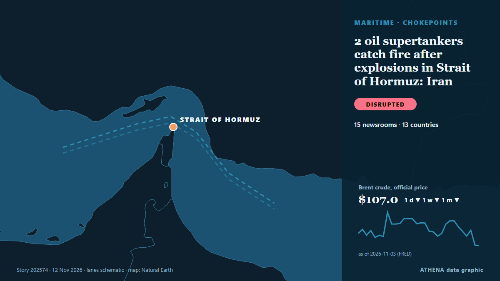

Ναυτιλία & λιμάνια
ΧορηγούμενοΠαρουσιάζεται από  Cybernetics and Artificial Intelligence Lab Welcome to the Cybernetics and Artificial Intelligence Laboratory, established at the Department of Business Administration of the National and Kapodistrian University of Athens. The lab is headed by Professor Dimitrios Thomakos. The lab aims to do research that can be published in top venues. Our research uses tools and methods of Artificial Intelligence, and lies in the following areas: - Forecasting - Decision making - Cyber security - Finance We are always looking forward to collaborating with exceptional students!
Cybernetics and Artificial Intelligence Lab Welcome to the Cybernetics and Artificial Intelligence Laboratory, established at the Department of Business Administration of the National and Kapodistrian University of Athens. The lab is headed by Professor Dimitrios Thomakos. The lab aims to do research that can be published in top venues. Our research uses tools and methods of Artificial Intelligence, and lies in the following areas: - Forecasting - Decision making - Cyber security - Finance We are always looking forward to collaborating with exceptional students!
| 31 Οκτ | 0 |
|---|---|
| 1 Νοε | 1 |
| 2 Νοε | 0 |
| 3 Νοε | 0 |
| 4 Νοε | 0 |
| 5 Νοε | 1 |
| 6 Νοε | 0 |
| 7 Νοε | 1 |
| 8 Νοε | 0 |
| 9 Νοε | 5 |
| 10 Νοε | 10 |
| 11 Νοε | 4 |
| 12 Νοε | 1 |
| 13 Νοε | 0 |
Οι τίτλοι των ειδήσεων παρουσιάζονται στα αγγλικά, όπως δημοσιεύτηκαν.

2 oil supertankers catch fire after explosions in Strait of Hormuz: Iran
Why is Iran attacking tankers during peace talks? από Gulf News
Asia buys up African, Brazilian oil as shipping costs fall
Asian buyers are taking advantage of decreased shipping costs to purchase more African and Brazilian crude oil. από Arab News
Get your data in order and set a course for greener shipping
There is cause for optimism in the shipping sector, and we are seeing more and more initiatives aimed at making shipping greener. από Container News
Iran attacks Didamar island shipping navigation systems in Oman
Gulf exporters have been increasingly using workarounds to increase oil flows via Hormuz, such as ship-to-ship transfers off the coast of Oman. από The New Arab
Tankers continue to burn in the Middle East despite hopes for de-escalation
(Corrects in paragraph 4 to 'a Navig8 tanker', removing reference to 'Navig8 Messi'; it was not clear which Navig8 tanker was shown) Nov 10 (Reuters) - Despite market bets on a de-escalation in the… από Al-Monitor
Russian Diesel Tanker Awaits Destination Off US East Coast
A tanker carrying the first cargo of Russian diesel for the United States has come to a halt off the US east coast, shipping data showed on Tuesday, with its operator saying its destination had not… από MarineLink
Greece Cruise Tourism Shifts as Piraeus Loses 19% of Passengers
Corfu has surpassed 1 million cruise passengers this year, while Rhodes, Chania and Heraklion face declining traffic as geopolitical tensions and rising costs prompt operators to rethink their… από To Vima (English)
Abeille Marengo Sails to Begin Greece-Cyprus Cable Surveys as Turkey Claims Its Consent Was Obtained, Athens Pushes Back
The French research vessel Abeille Marengo sailed from the port of Heraklion at 6:26 p.m. on Tuesday, November 10, to begin seabed surveys for the Greece-Cyprus electricity interconnection. από The National Herald
AD Ports Group posts record Q3 2026 profit as UAE container volumes fall 57%
Abu Dhabi, UAE (Ports Europe) November 11, 2026 – AD Ports Group reported record net profit of about €237 million in Q3 2026, up 64%, as shipping growth offset weaker UAE port volumes. από Ports Europe
UKMTO reports tanker incident in Strait of Hormuz
UKMTO reported an incident involving a tanker in the Strait of Hormuz. από Arab News
Another tanker hits mine in Strait of Hormuz
Coalition says it destroyed two ballistic missile launchers The Coalition has released footage it says shows the targeting and destruction of two ballistic missile launch platforms. από Gulf News
LR and MAWANI sign agreement to support the development of Saudi Arabia’s maritime and ports sector
Collaboration will explore opportunities spanning safety, sustainability, digitalisation, institutional capability and professional development Lloyd’s Register (LR) and the Saudi Ports. από Cyprus Shipping News
Black Sea Shipping Activity Falls 37% As Attacks On Merchant Ships Increase
Black Sea shipping activity has fallen by 37% compared with last year as attacks on merchant ships and port infrastructure have increased, Intent reported. από Marine Insight
Adnoc says vessel damaged after attack in UAE waters on November 10
[Editor's Note: Follow Khaleej Times live blog for the latest regional developments since the US-Iran war started on February 28]. από Khaleej Times (working feed)
Former Romanian Foreign Minister Toiu Says Black Sea Maritime Security Hub Could Eventually Include Moldova
Commission president pledges extra €10 million for sea rescues and urges Romania to request further SAFE loans. από Euractiv
Italy says EU nations failed to commit to Red Sea security, despite calls from FM
"I have yet to see anything concrete," Crosetto told Reuters, although he said EU foreign policy chief Kaja Kallas had "fully understood" the importance of Italy's request. από The Jerusalem Post
LNG transportation via Hormuz reached peak in October since February 2026 — Reuters
According to data from S&P Global Energy, 31 LNG tankers went through the Strait of Hormuz, of which 23 were loaded at Ras Laffan in Qatar and eight at Das Island in the UAE. από TASS (English)
Iran says no unauthorised vessels transited Strait of Hormuz overnight after navigation aids destroyed
DUBAI, Nov 9 (Reuters) - Navigational aid systems in the south of the Strait of Hormuz were destroyed and no unauthorised vessels transited the maritime route overnight, an unnamed Revolutionary… από Al-Monitor
11th chainPORT annual meeting at Tanger Med Focuses on scaling AI in ports
Representatives from leading ports around the world gathered in Tangier, Morocco, on 29 and 30 October for the 11th chainPORT. από Cyprus Shipping News